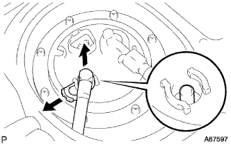
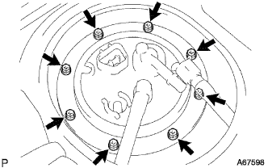

フューエル ポンプASSY 取り外し |
| 1. 燃料流出防止作業 |
参照| 2. リヤシートバツクASSY取りはずし（リヤシートバック一体可倒式） |
リヤシートバツクを前倒位置にする。
 |
ボルト2本取り付け部のクリップをはずす。
 |
リヤシートバツクカバーをめくりボルト2本をはずし、リヤシートバツクASSYを取りはずす。
| 3. リヤシートクッションASSY取りはずし（リヤシートクッション固定タイプ） |
前部のロックのレバーを図の矢印の方向に押してかん合をはずす。
リヤシートベルトを、リヤシートクッションカバー & パッド後部のゴムバンドに通す。
 |
リヤシートクッションASSY後部のフックのかん合をはずし、リヤシートクッションASSYを取りはずす。
| 4. リヤフロアサービスホール カバー取りはずし |
リアシートクッションASSYをはね上げる。(6:4分割可倒式シート車両)
クリップ5個をはずし、フロアカーペットをめくる。(6:4分割可倒式シート車両)
リアフロアサービスホールカバーをはずし、フユーエルポンプコネクタを切り離す。
| 5. フューエルタンク メインチューブ切り離し |
 |
チユーブジョイントクリップ先端を広げ、矢印方向に引き抜く。
メインチユーブを引き抜いて切り離す。
| 6. フューエルエミッション チューブ NO.1切り離し |
フユーエルチユーブコネクタクリツプ先端を指でつまんでコネクタを引き抜いて切り離す。
| 7. フューエルタンクベントチューブセット プレート取りはずし |
|  |
ボルト８本をはずし、フユーエル タンク ベント チユーブセツト, プレートを取りはずす。
| 8. フユーエルサクシヨンチユーブASSY W/ポンプ&ゲージ取りはずし |
フユーエルタンクよりフユーエルサクシヨンチユーブASSY W/ポンプ&ゲージを取りはずす。
フユーエルサクシヨンチユーブASSY ｗ/ポンプ&ゲージよりガスケツトを取りはずす。